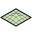
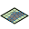
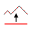
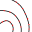
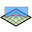

TopoAlign provides a set of Revit add-in commands to align and manage topographic surfaces and slabs, and to create and edit native Revit alignments. Typical outcomes include adding sampled points to topography from curves or intersections, aligning floor slab shapes to the underlying terrain, resetting regions of topography based on source/target selections, and creating alignments with a profile draped on the ground, labelling them and sweeping a road or path along them.
System Requirements
- Autodesk Revit: 2022, 2023, 2024, 2025, 2026 or 2027
- .NET Framework 4.8 for Revit 2022–2024; .NET 10 (Windows) for Revit 2025–2027
- Permissions to install Revit add-ins under your user profile
Installation
Installer
If an installer is provided, run it and start Revit. The add-in will appear in the Add-Ins tab.
Manual
- Build or obtain the add-in DLLs and the
TopoAlign.addinmanifest. - Copy them to:
%AppData%\Autodesk\Revit\Addins\<RevitYear>\. - Launch Revit and verify the commands in the TopoAlign tab.
Quick Start
- Open a model and switch to a suitable view (3D for most point projection workflows; plan for region reset).
- Use Align to Element to add points to topography from selected model elements.
- Use Align to Topo to shape a floor slab to the terrain, with an optional vertical offset.
- Use Points Along Contours or Points On Surface to add points to topography from selected lines.
- Use Create Alignment to build native Revit alignments from model/detail curves, picked points or CAD curves, with optional spirals and a profile draped on a toposolid.
- Use Edit Alignment to rename an alignment, change its start station or reverse it, and Station Labels to place station labels along it.
- Use Edit Profile to add stations to an alignment's profile and set the elevation of each.
- Use Sweep Along Alignment to build a road or path by sweeping a profile family along an alignment.
- Use Points At Intersection to place points where a face intersects the topography.
- Use Reset Topo Region to replace points within a rectangle from a source topo into a target topo.
Commands

Align to Element
Dialog-driven alignment of topography to selected elements. Provides a guided workflow.

Align to Topo
Shapes a floor slab to match the terrain within its outline, with optional vertical offset.

Points from Lines
Samples points on the topographic surface beneath selected curves and places them on the topo.

Points Along Contours
Adds points to topography at a fixed interval along selected model lines/curves.

Points At Intersection
Computes and adds points where a selected face intersects the topography.
Reset Topo Region
Replaces points in a rectangular region of a target topo with points from a source topo.
Create Alignment
Creates native Revit alignments from lines and arcs, picked points or CAD curves, with optional spirals and a draped profile.
Edit Alignment
Renames an alignment, changes its start station or reverses its direction.
Sweep Along Alignment
Sweeps a profile family along an alignment, following its plan and profile, to make a road or path.
Configuration & Paths
- Add-in manifest:
%AppData%\Autodesk\Revit\Addins\<RevitYear>\TopoAlign.addin - Installed binaries: same folder as manifest unless configured otherwise.
- Settings: stored per-user in the registry under
HKEY_CURRENT_USER\SOFTWARE\RGTools\TopoAlignand persisted between runs. This covers the divide, offset and alignment inputs, plus the choices made in Sweep Along Alignment (section family, category, geometry and output).
Logging
Anonymized usage is logged to Google Analytics. No personal data is collected. The information collection is the addin version, Revit version, command used and the country of the user.
Support
What's New
- Recent fixes and improvements to topography point handling.
- Updates for Revit2026 compatibility.
- Create Alignment: point (PI) and CAD input, transition spirals, and draping the profile on a toposolid.
- New Edit Alignment and Station Labels commands.
- New Sweep Along Alignment command to make roads and paths from a profile family, with a choice of segmented loft or smooth surfaces, and of a direct shape or a family as the result.
- New Edit Profile command to add stations to an alignment's profile and set their elevations.